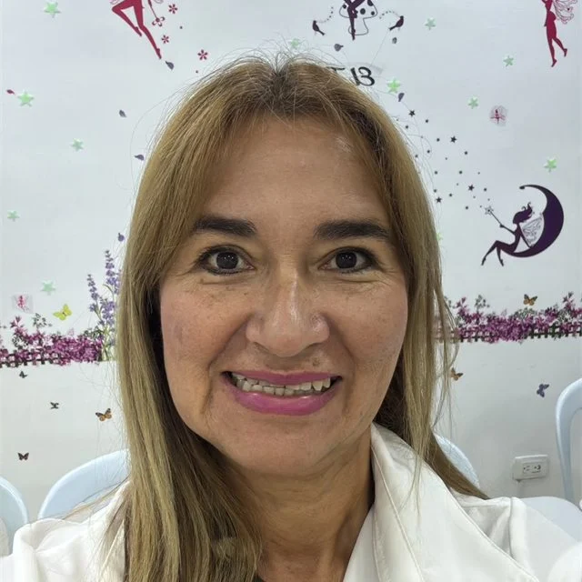
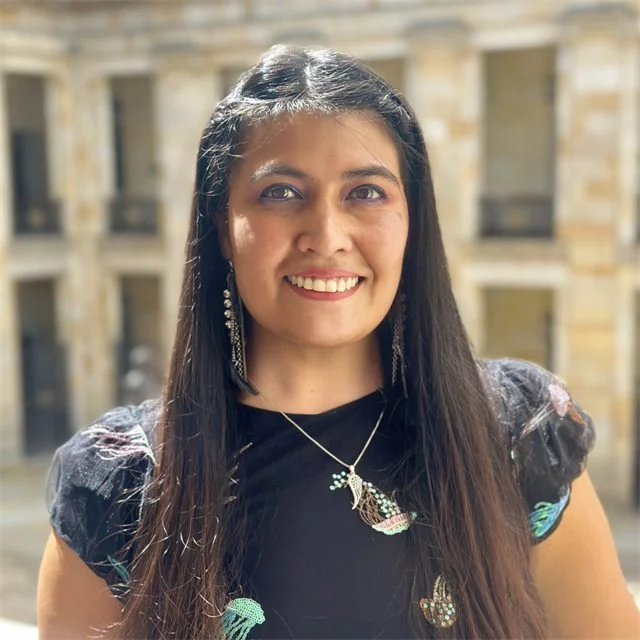

Kathy Villalba Ibarra
Constelaciones familiares y counselling
Ecuador
Cómo te puede acompañar
Acompañamiento a través de constelaciones familiares, counselling o escucha activa.
Iniciativa solidaria · colectivo del 9.º Encuentro de Constelaciones sin Fronteras
Una red solidaria de acompañamiento y apoyo para quienes han sido afectados por el terremoto. Personas dispuestas a escucharte, acompañarte y ofrecerte su tiempo, de manera gratuita y respetuosa.
Acompañamiento solidario y sin costo. Escribes directamente por WhatsApp al terapeuta que elijas.
Sentir que alguien está dispuesto a escuchar, acompañar y ofrecer su tiempo puede marcar una diferencia.
Abrazo en Red Colombia nace como una iniciativa solidaria de personas que han decidido poner al servicio de otros su conocimiento, experiencia y disponibilidad, para brindar espacios de acompañamiento a quienes hoy atraviesan las consecuencias del terremoto en Colombia.
Sabemos que cada persona está viviendo una realidad diferente. Algunas han perdido seres queridos, otras han enfrentado pérdidas materiales, cambios inesperados o momentos de profunda incertidumbre. Por eso hemos creado esta red: para ofrecer un espacio cercano, humano y respetuoso donde puedas sentirte acompañado.
Este es un gesto colectivo de solidaridad. Personas poniendo su conocimiento, su tiempo y su presencia al servicio de otras personas.
Estamos aquí para acompañarte
Consulta nuestra red de terapeutas, conoce cómo puede acompañarte cada uno y elige directamente el horario que mejor se adapte a ti.
Lee el perfil de cada terapeuta y la forma en que ofrece su acompañamiento.
Cada terapeuta indica los días y horarios en los que puede recibirte.
Con un clic abres WhatsApp y agendas directamente tu espacio de acompañamiento.
Nuestra red
Elige al terapeuta con quien quieras conversar y agenda tu espacio de acompañamiento.
Te pedimos agendar con un solo terapeuta. Cada persona de la red ofrece su tiempo de manera voluntaria, y reservar un único espacio permite que la red alcance para más personas que también lo necesitan.
Constelaciones familiares y counselling
Ecuador
Acompañamiento a través de constelaciones familiares, counselling o escucha activa.
Médica consteladora
Colombia
Terapia de trauma emocional y liberación de memoria celular.
Contención psicológica
Colombia
Tu salud mental también importa tras la emergencia. Escríbeme si necesitas contención psicológica y un espacio para hablar.
Psicólogo · Apoyo en trauma y crisis
Colombia
Apoyo en trauma y crisis.
Psicotraumatólogo
México
Acompañamiento y contención especializada para personas que han experimentado situaciones de trauma, violencia o estrés extremo.
Psicóloga transpersonal
México
Acompañamiento a personas que requieren soltar y volver a sí mismas en tranquilidad.

Terapeuta holística
Colombia
Soy terapeuta holística y te ayudo a encontrar tu grandeza y a renacer como el Ave Fénix.
Psicólogo
México
Desde joven he vivido varios desastres en mi país. Después de un evento tan dramático hay que volver a reestructurar la vida; te acompaño a asimilar todo lo que ha pasado, para que poco a poco vuelvas a reestructurar la tuya, que es lo que se necesita hacer.

Psicóloga holística y somática
Colombia
Acompaño a las personas afectadas por el temblor a transitar el miedo y la conmoción mediante escucha psicológica y herramientas somáticas de regulación del sistema nervioso. Ofrezco un espacio amoroso y compasivo para volver al presente, recuperar gradualmente la sensación de seguridad y reconectar con sus recursos internos y con el sentido de la vida.
Mg. Lic. · Escucha y contención emocional
Colombia
Cuando todo afuera se mueve, también puede moverse nuestro mundo interior… Te ofrezco un espacio seguro de escucha y contención para ayudarte a atravesar lo vivido y recuperar paso a paso tu centro.
El arte de sostener la vida
Colombia
Un espacio de escucha, presencia y acompañamiento para atravesar este momento.
Terapeuta integrativa
Colombia
Consteladora familiar, coach de vida y especialista en trauma y manejo de duelos. Instructora de Meditación del Corazón (Heartfulness).
Acompañamiento emocional
Colombia
Te acompaño emocionalmente en este episodio difícil.
Aquí encontrarás terapeutas dispuestos a brindarte su tiempo de manera solidaria, escucharte y acompañarte durante este momento.
Ver la red de terapeutas